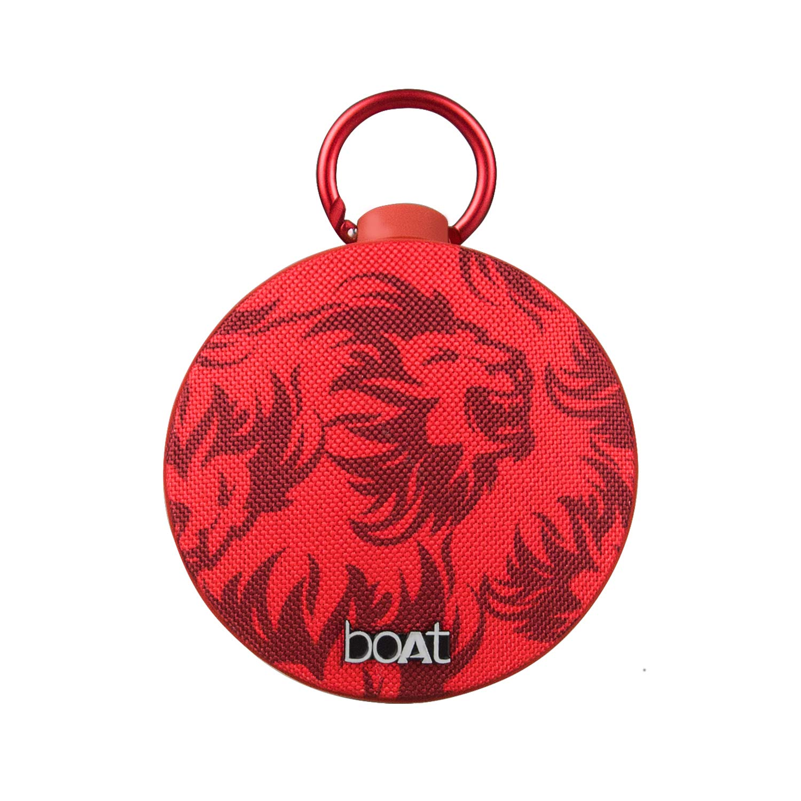

|  |
Speaker |
boAt Kings XI Punjab Edition Stone 260 Portable Bluetooth Speaker (Red) |
Rs:1499.00 |
Premium HD sound quality - fit for a king, play your favourite tracks with the passion they deserve
with the 1.75 inch dynamic driver and motivate yourself to bring about your dreams
4 to 5 hours of playback time - that allows you to get into the flow as you sink into the comfort
and sync into the sound with a 1000mah rechargeable lithium battery
Optimum wireless connectivity - with Bluetooth v50, connect with a wide range of Bluetooth
compatible devices, and plug into style with your favourite team’s blazing red trademark colour
Limited-edition series - for those outdoor trips to whenever you need to go, be it the hills or the
beaches, the stone 260 can negate any bouncy wicket, with its versatile and solid ipx 5 water
resistance design
|